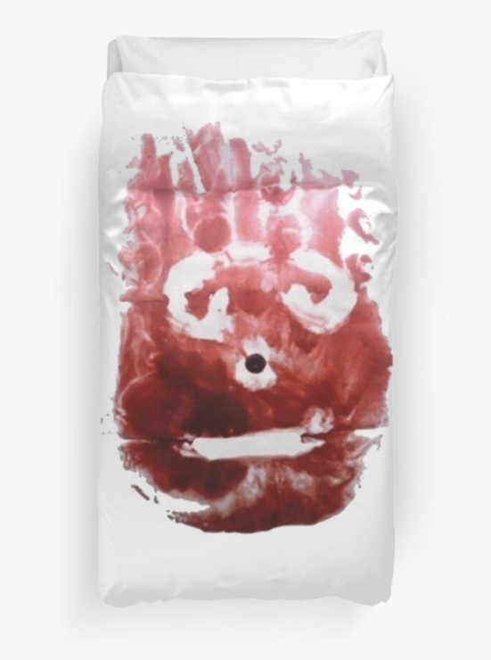

Love Is the Death of Duty
O! never say that I was false of heart,
Though absence seemed my flame to qualify.
As easy might I from myself depart
As from my soul, which in thy breast doth lie:
That is my home of love; if I have ranged,
Like him that travels, I return again,
Just to the time, not with the time exchanged,
So that myself bring water for my stain.
Never believe, though in my nature reigned
All frailties that besiege all kinds of blood,
That it could so preposterously be stained,
To leave for nothing all thy sum of good;
For nothing this wide universe I call,
Save thou, my rose; in it thou art my all.
Sonnet 109, William Shakespeare
Object Research by Andy Bennett
In 2000, the movie Cast Away was released. Wilson the volleyball served as Chuck Noland’s (played by Tom Hanks) personified friend and only companion during the four years that Noland spent alone on a deserted island. The volleyball is named after the volleyball’s manufacturer, Wilson Sporting Goods. From a screenwriting perspective, this character was created to enable realistic dialogue to take place in a one person situation.
I imagine Chuck Noland sitting on his raft looking at Wilson floating away and screaming, “You are an object that serves a function, there are expectations that you provide joy to some and profit others who let you get pushed around! I am a part of the problem. I am looking at your disposition through a human centric lens! I freed you from your original function, yet I assigned you a new function, that of companion, a role you never asked for.”
In 1965, the artist and teacher William T. Wiley found a peculiar slanted object in a Northern California salvage shop and gave it to his then-graduate student Bruce Nauman as a Christmas gift. Costing less than a dollar, this wood and green linoleum, one-of-a-kind handmade object struck these two artists as puzzling and fascinating, primarily because its function was a mystery. Though reminiscent of a step stool, the step of the stool sits at a forty-five degree angle to the floor, making it impossible to step onto—hence the name, the slant step. The ambiguous functionality of this object encourages a slower read, and enables the viewer to see it as more than one thing at a time, or as many different things in quick succession. In 1966, Wiley made a metal cast of the slant step that bore the following inscription:
“This piece is dedicated to all the despised unknown, unloved, people, objects and ideas that just don’t make it and never will, who have so thoughtlessly given their time and talent to become objects of scorn but maintain an innocent ignorance and never realize that you hate them.”
This unassuming, ambiguous object resonated not just with Wiley and Nauman, but also with a whole range of Bay Area artists. The slant step inspired multiple group exhibitions for which it served as a theme. It also engendered a catalogue, numerous articles, and was extensively used as a teaching tool by the painter Frank Owen, who is quoted saying, “This was its job—to pose on a model stand patiently and be drawn while also posing its eternal question: What is this thing, what is it for and why do we attend to it?” The slant step is now in the permanent collection of the University of California Davis. 1
These artists took in a once discarded object, treated it with care, focused on it, showed it to others, made copies of it and homages to it, in other words, they showed it love. Throughout history, humans have loved objects to various degrees, and in various ways. From sex toys to statues, humans have incorporated objects into a variety of intimate, affectionate, and erotic activities.
Object sexuality is a form of sexual or romantic attraction directed towards objects. People who experience this attraction may have strong feelings of love for and commitment to certain objects. They often believe in some form of animism, and sense reciprocation based on the belief that objects are conscious and able to communicate.
In Agnieszka Piotrowska’s 2008 documentary Married to the Eiffel Tower, Erika Eiffel says, “People can love objects, but they love them to a certain degree. More or less for practical purposes. That’s why they don’t see the soul of the object. Whereas when you truly, truly, are interested in an object, and you’re willing to bear your soul, then you see theirs.” The mind often identifies things in terms of their function and moves on, learning only as much as is needed. But the people featured in this documentary seem to be preternaturally attuned with certain objects beyond what interests their bodily functions. Despite this attunement, they are rather insistent on inserting themselves into a rather conventional social contract with their objects. This social contract substitutes an object for the role often played by another person in a relationship.
Amy Wolfe, another woman featured in Married to the Eiffel Tower, says:
“He’s just so noble, so proud, so strong. I not only love him for his sexual attraction, I mean, we’re not talking about fetish here, I love him as a mate. I love the roundness of his counterweights at the top. I love him for the narrowness of his jibs. I love him for the elegant lines of his gondola, which is now covered up for the winter. I like the ribbing up underneath his name display there too, the parallel lines that are coming down…. I love that.”
The scale of the objects often contributes to their status as unattainable objects of desire; the ideal union (for the person) will always be out of reach. So the people featured in Married to the Eiffel Tower make models of the objects of their fixation. While not comprised of the “original” material, the models serve as a kind of talisman—one that embodies the spirit of the “original” object. The models’ scale also enables human dominance over the object.
In 1817, Stendhal (pseudonym of Marie-Henri Beyle) wrote,
“I was in a sort of ecstasy, from the idea of being in Florence …. Absorbed in the contemplation of sublime beauty …. I reached the point where one encounters celestial sensations …. Everything spoke so vividly to my soul. Ah, if I could only forget. I had palpitations of the heart, what in Berlin they call ‘nerves.’ Life was drained from me. I walked with the fear of falling.” 2
The staff at Florence’s Santa Maria Nuova hospital are accustomed to tourists suffering from dizzy spells or disorientation after viewing the statue of David, other artworks in the Uffizi Gallery, and various historic relics in the Tuscan city. Scientific evidence has demonstrated that the same cerebral areas involved in emotional responses are activated during an exposure to art.
In 1953, Aldous Huxley wrote,
“I picked up…. a book on Botticelli. I turned the pages. [I pause on] ‘Judith.’ My attention was arrested and I gazed in fascination…. at the purplish silk of Judith’s pleated bodice and long wind-blown skirts. This was something I had seen…. that very morning…. when I looked down by chance, and went on passionately staring by choice, at my own crossed legs. Those folds in the trousers - what a labyrinth of endlessly significant complexity! And the texture of the gray flannel - how rich, how deeply, mysteriously sumptuous! And here they were again, in Botticelli’s picture…. [My] perception is not limited to what is biologically or socially useful. A little of the knowledge belonging to Mind at Large oozes past the reducing valve of brain and ego, into [my] consciousness. It is a knowledge of the intrinsic significance of every existent…. Draperies are living hieroglyphs that stand in some peculiarly expressive way for the unfathomable mystery of pure being. More even than the chair, though less perhaps than those wholly supernatural flowers, the folds of my gray flannel trousers were charged with ‘is-ness.’ To what they owed this privileged status, I cannot say. Is it, perhaps, because the forms of folded drapery are so strange and dramatic that they catch the eye and in this way force the miraculous fact of sheer existence upon the attention? Who knows? What is important is less the reason for the experience than the experience itself. Poring over Judith’s skirts…. I knew that Botticelli—and not Botticelli alone, but many others too—had looked at draperies with the same transfigured and transfiguring eyes as had been mine that morning. They had seen…. the Allness and Infinity of folded cloth and had done their best to render it in paint or stone. Necessarily, of course, without success. For the glory and the wonder of pure existence belong to another order, beyond the Power of even the highest art to express. But in Judith’s skirt I could clearly see what, if I had been a painter of genius, I might have made of my old gray flannels. Not much, heaven knows, in comparison with the reality, but enough to delight generation after generation of beholders, enough to make them understand at least a little of the true significance of what, in our pathetic imbecility, we call ‘mere things.’” 3
The combined weight of what we have produced—“mere things”—for the first time outweighs all of the animals and plants on the planet. The estimated weight of human-made objects is about one teratonne. Every person in the world now consumes more than their body weight in stuff each week. We are no longer solely overwhelmed by objects in our internal worlds, but also in our external world. From plastic bottles to the bricks and concrete that are used for buildings and roads, the weight of all that we produce has continued to double every twenty years. At the same time, the combined weight of all living things has steadily declined, mainly due to the loss of plant life in forests and natural spaces. If continued in this manner, by 2040, the weight of all human-made stuff will have almost tripled from just over one teratonne to approximately three teratonnes. This means that humans now produce stuff at a rate of more than thirty gigatonnes per year. 4
1 Jessica Brier, The Linoleum Symbol of a New and Coming Faith (2013).
2 Stendhal (pseudonym of Marie-Henri Beyle), Naples and Florence: A Journey from Milan to Reggio (1817).
3 Aldous Huxley, The Doors of Perception (1954).
4 Helen Briggs, Human-made objects to outweigh living things (2020).
Images (in order of appearance):
Still from Robert Zemeckis’ Cast Away, 2000.
Anonymous, The original “slant step,” 1965.
wood, linoleum, and rubber; 18.88x15x12.25in.
William T. Wiley, Slant Step Becomes Rhino/Rhino Becomes Slant Step, 1966.
Plaster, acrylic, paint, and chain; 22x12x12in. Collection of Bonnie Ruder and Ron Wagner.
Bruce Nauman, Mold for a Modernized Slant Step, 1966.
Collection Museum of Contemporary Art
Stephen Kaltenbach, Slantstep 2, 1969. Fiberglass and rubber. Courtesy of the Artist.
Promotional image from Agnieszka Piotrowska’s Married to the Eiffel Tower, 2008.
Eija-Riitta Eklöf-Berliner-Mauer’s model of a section of the Berlin Wall. Photo taken by Lars Laumann, 2008.
Michelangelo, David, 1501–1504.
Marble. 517 cm × 199 cm (17 ft × 6.5 ft).
Le Gallerie degli Uffizi, Florence, Italy.
Sandro Botticelli, The Return of Judith to Bethulia, 1472.
Oil on panel. 31 x 24 cm. Le Gallerie degli Uffizi, Florence, Italy.
Still from A&E’s Hoarders, “Dorothy and David,” 2016.
Love Alone by CLB


Domino by Mave Bowman


In Order of Appearance
Beetlejuice
Teenage Mutant Ninja Turtles
Mrs. Doubtfire
Raising Arizona
Halloween
Eyes Wide Shut
The Nightmare Before Christmas
Jules Et Jim
Point Break
Batman Returns
The Princess Bride
Face/Off
Breakfast At Tiffany’s
The Mask
Romance is everything
